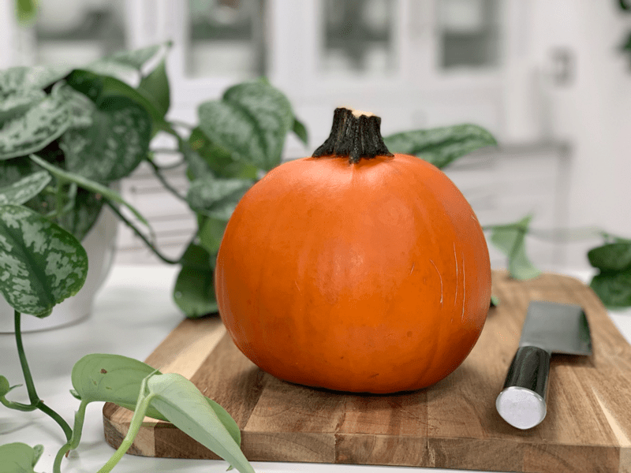

Sugar Pumpkin Puree
– raw, vegan, gluten-free, nut-free –
I tend to use pumpkin puree in many of my recipes, especially in those that roll around during the holiday season. I have done write-ups within recipes on how to make raw pumpkin puree but never a post by itself. I figured it was time to do so because it can seem a bit daunting to some, much like nut butters.

I am here to put your fears to rest. The only requirement is that you need a high-powered blender to get the result of a smooth and creamy puree. Because I don’t want to overburden either machine, I use both my food processor and blender for this process. Start the puree process in the food processor, breaking it down a rice size, then from there, I transferred to the high-powered blender to make it creamy.
The process is straightforward; I am going to ask you to trust me on this. If pumpkins are not in season, you can use canned pumpkin. Or better yet, when the season rolls around, and sugar pumpkins are in abundance… you can make the puree and freeze it for future use.

Fresh food is always the most optimal way to enjoy fruit or veggies, but I don’t feel that there is anything wrong with occasionally partaking of frozen or canned. The main thing is to choose organic, BPA -free cans. I am not a huge proponent of using canned foods, but I feel that it is important to share these options because we are at all different stages of our journeys when it comes to our food. Also, depending on where you live, it plays a significant impact on what is readily available. I am only here to encourage you to do your best with what you have.
If you have a difficult time digesting raw pumpkin, you can always steam or roast them. Keep in mind that the recipe I am sharing is a pure pumpkin puree, I purposely didn’t add any spices or sweeteners. That way, you can add your own when using it in different recipes. The measurements that I provided below are just guidelines, and since we are not adding any other ingredients, I can get away with that. hehe
 Ingredients:
Ingredients:
- 6.4 lbs sugar pumpkin (chopped 12 cups chopped = 12 cups grated= 8 1/2 cups puree)
Preparation:
- Wash and dry the sugar pumpkin.
- With a sharp knife, cut the top and bottom off of the pumpkin.
- Make sure that the cutting board beneath it is stable. Wet a dishrag, ring out the water and lay it flat under the cutting board, this will prevent it from slipping.
- Remove the pumpkin skin either with a knife or potato peeler. Some surfaces are tougher than others, so use the best-suited utensil.
- Cut the pumpkin in half and scoop out the seeds. Save those. Toss with seasonings and dehydrate! Great, healthy snack.
- Now cut into long wedges about 1″ wide. Then dice it crosswise into small cubes. About 1×1″ is best.
- Place 2-4 cups of cubes in the food processor and process until it reaches a rice-sized texture — place in a bowl.
- Repeat this process until all the pumpkin has been riced.
- The amount you can do at one time will depend on the size of the food processor and the size of the pumpkin that you started with.
- Once all the pumpkin is riced, transfer 4-6 cups worth to the high-powered blender.
- I used my Vitamix with the tamper. I quickly turned the blender to high speed, and with a rapid movement of plunging the tamper, it only took about 30 seconds to have a creamy puree.
- Repeat this entire process until you have used up all of the pumpkins.
- Use within 3-5 days.
- To freeze; divide the puree into 1 cup servings, put in zip lock bags, remove as much air as possible, press flat, stack, and freeze. Your pumpkin should keep for 6-12 months. To use thaw your pumpkin puree in the refrigerator overnight.
© AmieSue.com